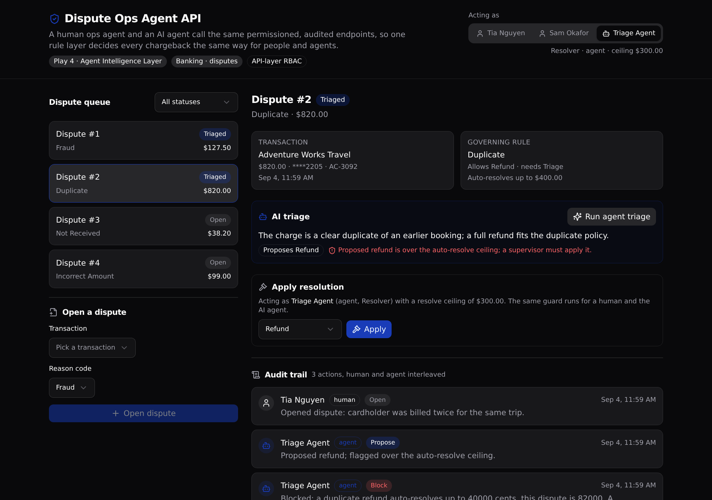

A governed banking dispute API where a human ops agent and an AI agent call the same permissioned, audited endpoints, so one rule layer decides every chargeback the same way for people and agents.

A bank wants to let an AI agent triage card disputes. The Director of AI has one question before that ships: can the agent do anything a policy would forbid a person? This backend answers it by construction. A human ops agent and an AI agent authenticate against the same table and call the same endpoints, and the resolve endpoint runs one rule guard for both.
Permissions are API-layer role checks (an auth table, a minted token, and a per-endpoint precondition), never row-level security. Every governed action, human or agent, writes one row to an audit log, so the trail reads as one interleaved history.
| Verb | Path | What it enforces |
|---|---|---|
| POST | /api:dispute/seed | Idempotent bootstrap. Seeds identities, policy, transactions, and disputes, then mints a token per identity. |
| POST | /api:dispute/login | Email and password to a token via check_password. |
| POST | /api:dispute/cases/open | Opens a dispute after checking the transaction exists and the reason has a rule. Writes an open action. |
| POST | /api:dispute/triage | The AI agent endpoint. Classifies the dispute and proposes a resolution inside policy. Records an agent run and a propose action tagged agent. |
| POST | /api:dispute/cases/resolve | The rule guard. The same role check and amount-ceiling check run for a human and the agent. Writes apply or block. |
| GET | /api:dispute/cases | Lists disputes, with an optional status filter. |
| GET | /api:dispute/cases/{dispute_id} | One case with its transaction, the governing rule, the full audit trail, and its agent runs. |
Act as a human triage operator, a human supervisor, or the AI agent, using the seeded tokens. Every call carries that identity.
The case list by status, with a filter and a form to open a new dispute against a seeded transaction.
The case, its transaction, and the governing rule side by side, with the AI proposal and the rule-guarded apply.
Every human and agent action in one interleaved list, each tagged with the actor and whether it was a person or the agent.
Clone it and deploy your own live copy in about a minute.
git clone https://github.com/xano-scratch/dispute-ops-agent-api.git
cd dispute-ops-agent-api
npm install
npx xanots login
npm run xano:deployOr hand this prompt to a coding agent:
Clone https://github.com/xano-scratch/dispute-ops-agent-api and set it up as a
XanoTS project. Run npm install, then npx xanots login and npm run xano:deploy to
deploy the backend and its frontend to a live Xano environment. Then show me the
resolve endpoint and explain how one rule guard blocks the AI agent and a person
the same way.@xanots/sdk defs; the frontend derives its paths and types from those defs.